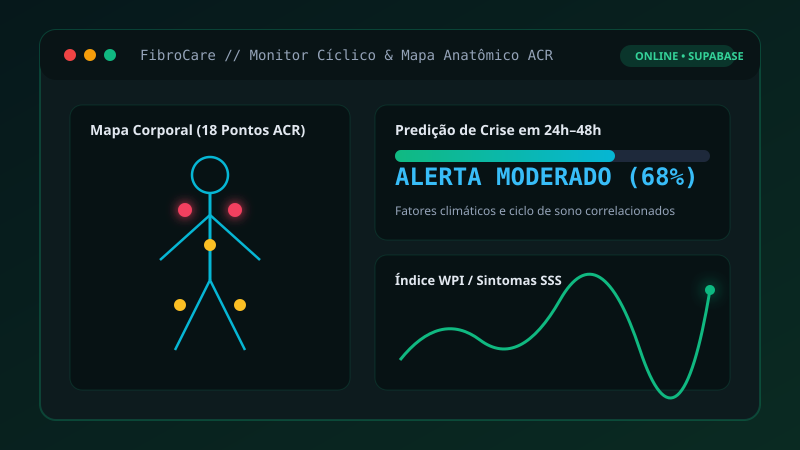
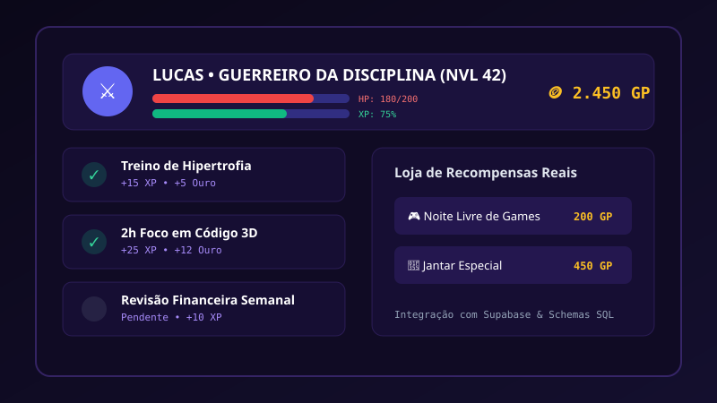

Projetos Selecionados

FibroCare (FibroTracker)
Resumo rápido sobre o case de sucesso: Plataforma de saúde para monitoramento de dor crônica com mapa anatômico dos 18 pontos do ACR e predição de crises em 24h–48h.

Habit RPG Tracker
Resumo rápido sobre o case de sucesso: Design comportamental aplicado a rotinas diárias e finanças, elevando a retenção através de loops de recompensa tangíveis.

Corpo Seco: A Maldição
Resumo rápido sobre o case de sucesso: Jogo 3D de terror e suspense na mata com Three.js. Design sem barras de vida (UI diegética) onde a luz e a névoa guiam o jogador.
Apresentando-me
Transformando complexidade em clareza, usabilidade e experiências digitais memoráveis.
Sou designer de produto com atuação completa desde a descoberta do problema (Product Discovery, pesquisa qualitativa e arquitetura de informação) até a execução de alta fidelidade em UI Design, Design Systems e Prototipagem Interativa.
Minha abordagem une psicologia cognitiva, design comportamental e domínio prático de tecnologia (React, Three.js, Canvas), garantindo que cada decisão de design seja viável, acessível (WCAG) e voltada para gerar impacto real de negócio e satisfação do usuário.
Projetos
Lista completa de produtos digitais, ferramentas e jogos interativos.